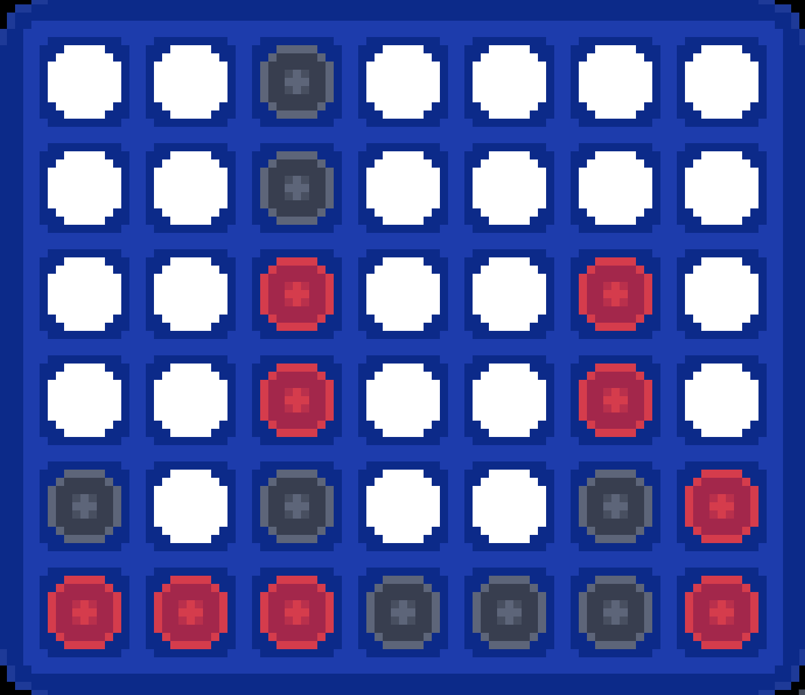

My Projects
Dino Game

A recreation of the chrome "no-wifi" game using the SDL library in C. Features dynamic memory concepts covered in my imperative problem solving class.
Mine Sweeper
Recreated the classic minesweeper game with a simple representation of the board displayed in the console.
Connect 4
Recreated the classic connect 4 game using the NCurses library.
Maze Solver

Developed an algorithim that utilized backtracking to find the fastest exit from a maze